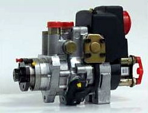
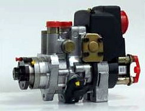

Delphi-Lucas forgóelosztó rendszerû, mechanikus szabályozású adagolók. Balról jobbra haladva egy DPA típusú, majd mellette 2 DPC rendszerû adagoló látható

Delphi forgóelosztó rendszerû, elektronikus szabályozású EPIC adagolók.
Balról kezdve: egy PSA 2.1 SVDT motorra szerelt, közvetett befecskendezésû EPIC - IDI adagoló, majd egy Mercedes C-220, E-220 típusba szerelt, szintén EPIC - IDI adagoló következik, végül pedig egy Ford Transit 2.5TD jármûbe szerelt, közvetlen befecskendezésû EPIC - DI adagoló.

A képen a Lucas által kifejlesztett, majd a Delphi által sorozatgyártásra került magasnyomású rendszere látható. A szivattyú jellemzõje, hogy a magasnyomást radiál dugattyúkkal, bütykösgyûrûvel vezérelve hozza létre. Sajátossága, hogy az álló adagolóelem radiáldugattyúi körül forog a meghajtótengellyel együtt a bütykösgyûrû. A rendszer nyomását, bemeneti-mennyiségszabályozó szeleppel végzi. A Cr porlasztója mágnestekercs vezérlésû. A befecskendezés vezérlését itt is, mint a Bosch-nál, differenciált nyomásvezérléssel oldották meg. Közös magasnyomású gyûjtõcsõ helyett egyes típusoknál alkalmaznak még "gömb" alakú kivitelt is.

A képeken a Delphi magasnyomású szivattyú Hartridge próbapadi felszerelése, vizsgálata látható. A vizsgálathoz gyári, speciális kiegészítõegységek szükségesek. A bevizsgálás a Delphi által kifejlesztett szoftver segítségével történik. Ez legegyszerûbben az EPIC adagolók vizsgálatához kialakított ETK berendezés felhasználásával oldható meg. Az ETK PC-jén futó program hardveresen kapcsolatban van a próbapad vezérlõegységeivel, érzékelõivel. A vizsgálat egyik leglényegesebb része a bemeneti (IMV) mennyiségszabályozó szelep vizsgálata. Ha ez nem mûködik megfelelõen, a gépjármû vészüzemmódban fog csak mûködni.